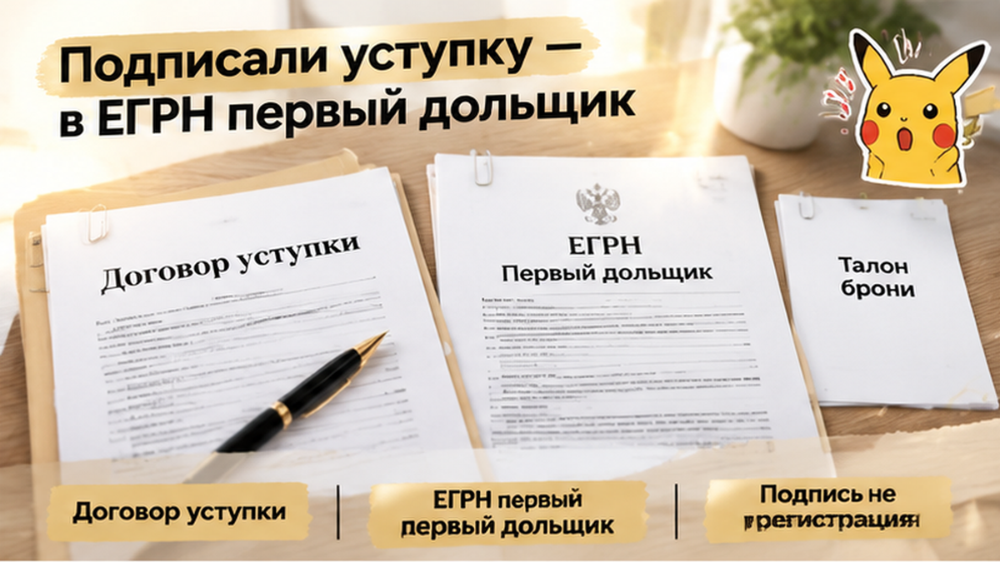
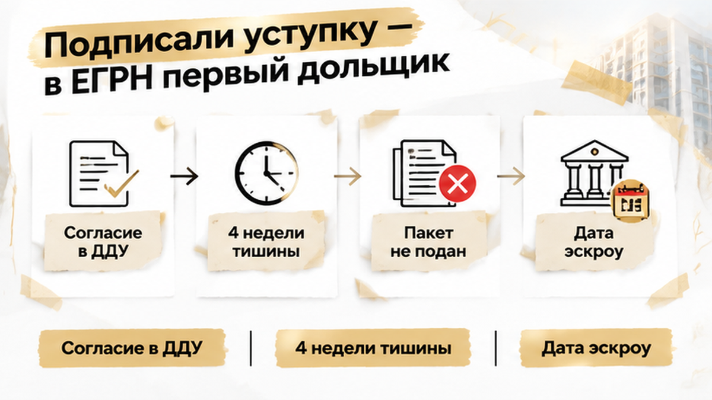

В Тюмени семья 28 дней ждала регистрацию переуступки — и за сутки до открытия эскроу потеряла выбранную квартиру: лот забронировал другой покупатель. Договор уступки подписали, бронь внесли, менеджер несколько раз обещал: «Согласие застройщика будет на этой неделе». Семья готовилась к оплате по ДДУ, но между подписью на бумаге и новым статусом в ЕГРН оставался обязательный шаг. Его не сделали — и к денежному дедлайну покупатели подошли не с зарегистрированным правом, а с обещаниями.
Я Святослав Шакин, The Риэлтор, Тюмень. Разбираю покупки новостроек по конкретным действиям: кто подаёт документы, когда переходят права и за что именно платит покупатель. Больше таких разборов — в Telegram и MAX.


Семья выбрала планировку в офисе застройщика, встретилась с первым дольщиком, подписала договор уступки и внесла бронь. Всё выглядело почти завершённым: знакомый стол, менеджер рядом, документы на руках.
Но при переуступке покупают не готовую квартиру у застройщика. Покупатель получает право первого дольщика потребовать квартиру после завершения строительства. Поэтому продавцом остаётся прежний участник ДДУ, даже если договор подписывают в офисе продаж.
Подпись под уступкой ещё не делает покупателя новым дольщиком. Переход права нужно зарегистрировать в ЕГРН. Пока записи нет, в выписке указан первый участник, а покупатель не может требовать квартиру от застройщика вместо него.
Бронь этого не меняет: она существует по отдельному договору во внутренней системе продаж. Квитанция подтверждает оплату удержания лота, но не превращает покупателя в нового участника ДДУ.
Есть и денежная развилка. Если первый дольщик полностью рассчитался, уступается уже оплаченное право. Если по ДДУ остался долг, нужно отдельно разбирать его перевод и согласие застройщика. Поэтому письменное согласие нельзя откладывать, даже если в офисе уверяют, что всё под контролем.
Эскроу — отдельная история. Это счёт, связанный с оплатой строительства и будущей квартирой, а не кошелёк для любых расходов вокруг сделки. Подробнее о том, почему деньги на эскроу могут оказаться заморожены при переносе сроков, я рассказывал в разборе про ключи от новостройки и деньги на эскроу.
В исходном ДДУ было условие: для этой уступки нужно письменное согласие застройщика. Значит, слова менеджера «будет на этой неделе» означали лишь одно — документ ещё ждут. Уступка не была готова к регистрации.
При полностью оплаченном ДДУ согласие требуется не всегда. Но если такое условие записано в договоре, его нельзя пропустить. Покупателю нужна сама бумага, после которой продавец и покупатель смогут подать документы, а не устное «всё нормально».
Одна неделя прошла, потом вторая, третья. Почти четыре недели семья слышала, что вопрос решается. Но это не принятые документы: пока согласие не получено и пакет не подан, регистрационный срок не начался.
Календарь оплаты продолжал идти: дата открытия эскроу была назначена, продавец ждал расчёта, а выбранный лот оставался внутри системы продаж.
Я в такой ситуации разделяю помощь менеджера и обязанности сторон уступки. Застройщик может выдать согласие, но не становится продавцом права: документы на регистрацию подают первый дольщик и покупатель. Поэтому важно спросить, что именно задерживается, кто отвечает за следующий шаг и каким документом это подтверждается. Фраза «оформляем на этой неделе» слишком широка: пока не названы документ, ответственный и дата подачи, движение сделки существует только в разговоре.
За 28 дней у семьи так и не появилось главного подтверждения: документы приняты Росреестром. Договор уступки подписали, бронь оплатили, но ни расписки, ни описи, ни номера заявления покупателям не показали.
Пока пакет не приняли, регистрация не началась. Срок после встречи, подписи и оплаты брони часто путают со сроком у регистратора: отсчёт регистрационных действий начинается после приёма документов, а не после рукопожатия в офисе.
Расписка или опись не означает, что право уже перешло, но показывает: заявление подали, документы приняли, у процесса появились номер и дата. Это граница между реальным движением и разговорами о том, что «вот-вот всё оформим».
Подавать уступку должны её стороны — первый дольщик и покупатель. Застройщик может дать согласие, если оно требуется, но его участие не заменяет подачу документов. Поэтому важно спросить: согласие получено? кто подаёт уступку? где опись с номером заявления?
Пока эти действия называют одним словом «оформляем», задержку легко не заметить: один участник согласовывает, другие передают документы, Росреестр регистрирует. Если первый шаг не сделан, календарь сделки всё равно идёт, особенно когда дата открытия эскроу уже назначена.
Бронь жила отдельно от перехода права. Деньги поступали по договору бронирования, а не на защищённый счёт эскроу: квитанция подтверждала оплату, но не делала покупателя новым участником ДДУ и не вносила его в ЕГРН. Сколько объект должны удерживать и что происходит с платой при прекращении брони, зависит от договора. Бронь может временно удерживать предложение во внутренней системе продаж, но не заменяет зарегистрированную уступку.
За сутки до назначенного дедлайна менеджер позвонил семье и сообщил: выбранный лот уже забронировал другой покупатель. Это не означало, что чужая покупка зарегистрирована, но квартиру больше не держали за прежней семьёй.
Подписанная уступка до регистрации не дошла, а внутренняя бронь не сохранила договорённость до запланированного расчёта. До звонка оставалось открыть счёт, внести деньги по ДДУ и получить квартиру на выбранных условиях. После него стало видно: календарь платежей ушёл вперёд документов.
По статье 15.5 закона о долевом строительстве права по уже существующему счёту эскроу переходят к новому участнику только после государственной регистрации уступки. Если по условиям сделки должен открываться новый счёт, сначала также нужно оформить участие покупателя в ДДУ.
Обещание «завтра откроем эскроу» не заменяет зарегистрированную уступку. Готовность семьи внести деньги не могла закрыть пропущенный этап: сначала требовалось подтвердить новый статус покупателя, а уже потом проводить связанные с ним банковские действия.
Похожий разрыв между одобрением сделки и открытием счёта был в разборе новостройки, для которой эскроу так и не открыли. Но здесь причина была другой: переход прав от первого дольщика не зарегистрировали.
На столе лежали подписанный договор, деньги и назначенный дедлайн — но не было записи в ЕГРН. Последние сутки не могли исправить этот разрыв звонком или обещанием успеть.
В назначенный день семья не открыла эскроу и не стала новым участником ДДУ: переуступку не зарегистрировали, поэтому до банковского шага дело не дошло. Лот уже держали для другого покупателя, а выбранную планировку пришлось искать заново — по более высокой цене.
С бронью ситуация оказалась отдельной. Застройщик предложил вернуть только часть внесённых денег, но окончательный расчёт нельзя делать без договора: бронь оплачивалась не на эскроу, а по отдельному соглашению. В нём нужно смотреть сроки, условия возврата и ответственность сторон.
Претензию по договору уступки направили. Но она не возвращает квартиру и не превращает подписанный документ в зарегистрированный переход права. Деньги для ДДУ остались у семьи, а сам лот ушёл.
Требования здесь нельзя складывать в одну жалобу «застройщику». По регистрации уступки нужно смотреть обязанности сторон, по согласию и возврату брони — договор с застройщиком и переписку с менеджером. Одно дело — кто обещал подготовить документ, другое — кто должен был подать уступку. Эскроу не открыли не потому, что семья передумала платить: без зарегистрированной уступки банковский шаг не наступил.
28 дней регистрацию тянули, а лот сняли за сутки до эскроу: вы бы ждали согласие застройщика или сразу искали другую переуступку, даже если цена уже поднялась?
Я бы в такой сделке разложил документы на три стопки. Бронь отвечает за удержание предложения, уступка — за переход права требования квартиры, эскроу — за расчёты по ДДУ. Подписанный договор сам по себе не защищает покупателя от продажи лота другому человеку.
| Статус | Что он означает | Чего не подтверждает |
|---|---|---|
| Бронь у застройщика | Есть отдельная договорённость удерживать лот на условиях договора бронирования. | Покупатель ещё не стал участником ДДУ. Условия срока и возврата платы нужно смотреть отдельно. |
| Уступка зарегистрирована в ЕГРН | Право требования квартиры перешло от первого дольщика к покупателю. | Сама регистрация не означает, что все расчёты уже проведены. |
| Эскроу | Счёт связан с оплатой по ДДУ. При уступке права по существующему счёту переходят после её государственной регистрации. | Бронь и деньги продавцу за уступку не становятся защищёнными средствами на эскроу. |
Новый счёт нужен не при каждой переуступке. Если первый дольщик уже внёс деньги на эскроу, права по этому счёту переходят новому участнику после регистрации уступки. Если по ДДУ остался долг, отдельно разбирают его перевод и согласие застройщика.
Поэтому фраза «завтра откроем эскроу» сама по себе ничего не решает. Сначала нужно понять, зарегистрирована ли уступка и какой платёж предстоит. В другой ситуации ипотеку одобрили, а эскроу так и не открыли: причина там иная, но одобрение или обещанная дата не равны завершённой сделке.
До брони нужно зафиксировать три вопроса: кто получает письменное согласие, кто подаёт документы и чем подтверждается подача. Подойдёт опись или расписка с номером заявления, а не сообщение «всё приняли в работу». При близком дедлайне полезно заранее определить точку остановки, как в ситуации, когда условия ипотеки изменились перед подписанием ДДУ: здесь причина другая — неподготовленный переход прав.
Плату за уступку продавцу разумно связывать с регистрацией, а не с одной подписью в офисе. Если срок эскроу приближается, а документов в Росреестре нет, стоит параллельно смотреть другой лот — не из паники, а чтобы сохранить выбор.
Разбираю покупку новостройки по документам, а не по обещанной дате. Если в вашей переуступке непонятно, кто и что должен сделать, напишите в Telegram или MAX.
Семья потеряла выбранную квартиру, но в следующей сделке уже знала, что делать: не платить уступку до регистрации, требовать опись подачи и получать согласие застройщика письменно. Если дедлайн близко, а документы всё ещё «на согласовании», остановить бронь и искать другой вариант неприятно, зато покупатель сохраняет выбор до передачи денег.